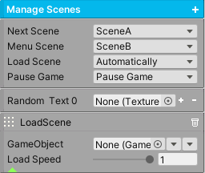
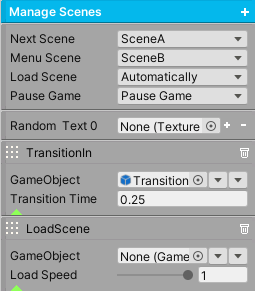
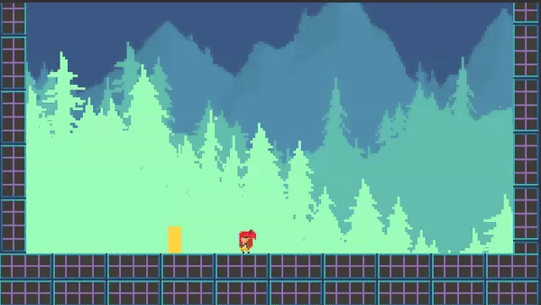

Scene Management
Transition from the current scene to the next scene with ease. The scene manager loads the specified scene, and can control any screen transitions if they exist.
To get started, place a ManageScenes component on a gameobject. Click the add button to add transitions. The types are TransitionIn, TransitionOut, and LoadScene. At the very least, you will need a LoadScene or else no scenes will load. Then, you can trigger a scene load from any unity event by calling this component.
Tip
Include scenes in Unity’s Build Settings to use them.
Method |
|
|---|---|
LoadNextScene() |
The next scene will be loaded. |
LoadMenuScene() |
The menu scene will be loaded. |
LoadScene(string sceneName) |
The specified scene will be loaded. |
Property |
|
|---|---|
Next Scene |
Specify which scene to load when LoadNextScene() is called. |
Menu Scene |
Specify the menu scene to load when LoadMenuScene() is called. |
Load Scene |
If Automatically is enabled, once the scene has finished loading, it will transition completely into the new scene. Otherwise, the system will wait for any user input before transitioning completely. |
Pause Game |
If Pause Game is enabled, the game will be paused during a scene transition. |
Random Text |
Any transitions that exist will have their textures randomized by the specified textures. Place textures here from the AssetsFolder/Transitions/Textures folder. Use the TransitionAny prefab if implementing this. |
Transition In/Out. |
This gameobject will be set active true if it exists. If this object is a transition, it will reach complete coverage on Transition In. It will reach complete transparency on Transition Out. If Deactivate is enabled, this gameobject will be deactivated when the Transition Time expires, or else it will be left as is. |
Load Scene |
After the transitions complete, if any, this step will finally begin to load the scene. The gameobject, if it exists, will be set active true. This object can be a loading scene (which is not a transition). By changing the load speed, this will slow down the loading. A value of 1 is maximum speed. |
Event |
|
|---|---|
On Start |
The Unity Event invoked when a Transition or Load Scene starts. |
On Complete |
The Unity Event invoked when a Transition or Load Scene completes. |
Loading Progress Float |
This Unity Event is invoked with a percentage of the loading time. This can be used to set UI elements. |
Loading Progress String |
This Unity Event is invoked with a percentage of the loading time in string format. This can be used to set UI elements. |
Here is an example of using a Transition In. Place the TransitionFade prefab (found in AssetsFolder/Transitions/Prefabs) as a child of ManageScenes, and deactivate this object. This transition will cause the screen to fade to black.
Next, create a Transition In and set it as LeaveAsIs, so when the transition completes the fade in effect remains. Drag and drop the prefab into the gameobject field to set its reference.
Finally, call LoadNextScene() from a unity event. In this example, an AIFSM triggers this event when the player enters the door, telling ManageScenes to load SceneA. Before the scene loads, the screen will fade to black first.
{kind=link}